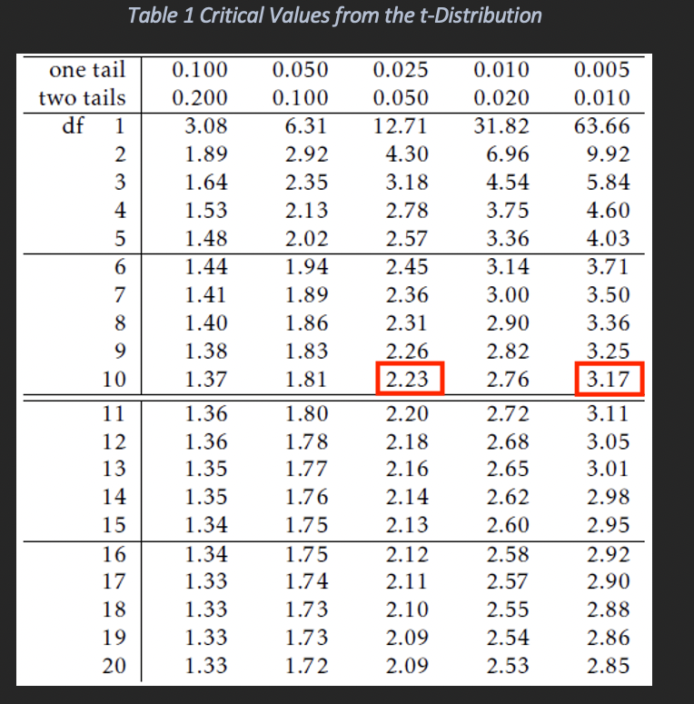
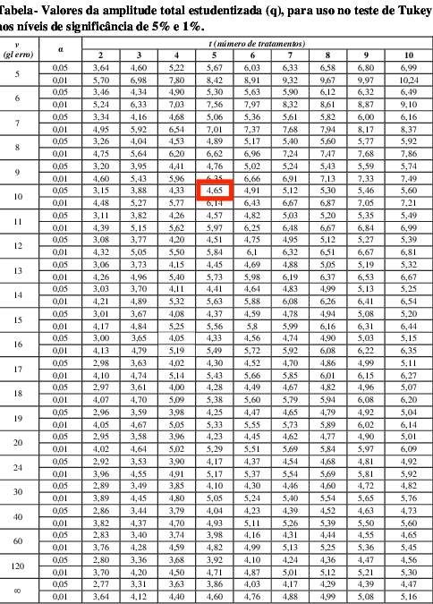
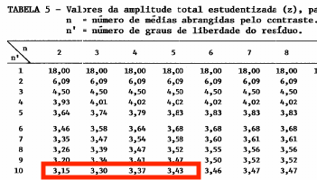
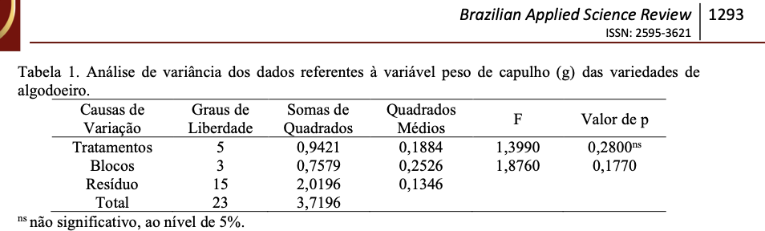
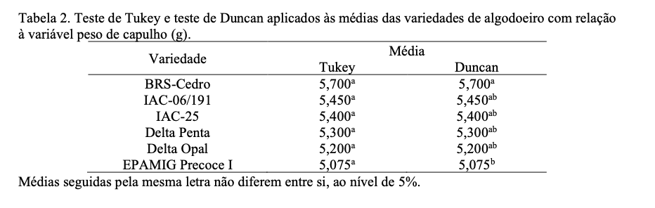
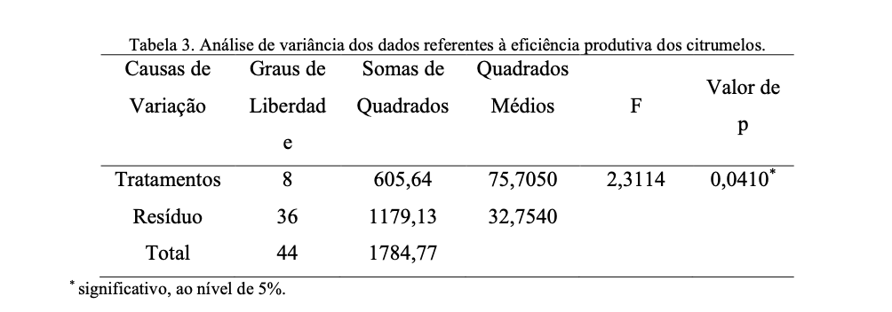
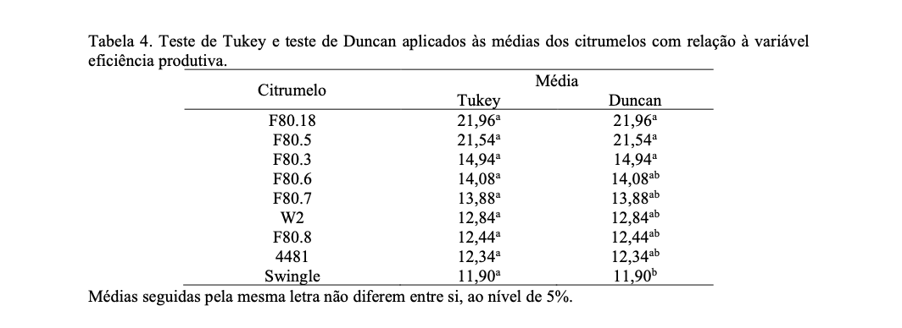
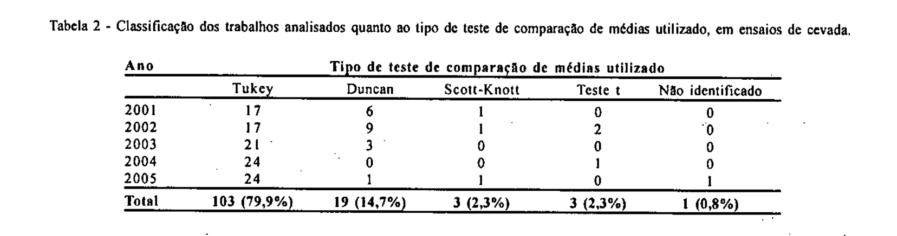

Planejamento e Análise de Experimentos Agrícolas
Departamento de Genética
Escola Superior de Agricultura Luiz de Queiroz
Universidade de São Paulo
18/01/2026
Background

Agronomist (UFCA→ 2018)
Msc. in Genetics and plant breeding (UENF→2020)
Dsc. in Genetics and breeding (UFV→ 2024)
Postdoctoral research scholar (UFV→2024-2025); (ESALQ/USP→Current)
Qual a importância de utilizar um teste de hipóteses para comparação de médias?
Contrastes
Contrastes
Teste F
- O teste F permite tirar conclusões gerais relacionadas com os tratamentos, indicando apenas se existem ou não diferenças significativas entre os tratamentos em relação à característica analisada.
\[ H_0: \mu_1 = \mu_2 = ... = \mu_I \mid H_1: \mu_I \neq \mu_{I'} \]
- O que fazer após rejeitar a hipótese \(H_0\) ? Quais médias diferem entre si?
Teste de comparação de médias
- Para comparar as médias e selecionar os melhores tratamentos deve-se utilizar os testes de comparação de médias.
Comparações de Médias
Tratamentos Qualitativos
A comparação de médias é recomendada quando são analisados fatores qualitativos.
Ensaios de diferentes variedades de cebola
Ensaios de diferentes híbridos de pimentão
etc …
Quando se utiliza fatores quantitativos (Ex. doses crescentes de fertilizante) a análise a ser processada é a de regressão.
Contrastes
- São relações lineares entre as médias verdadeiras dos tratamentos, de forma que a soma algébrica dessa função seja nula.
Contrastes
Contrastes entre médias
\(H_0\): \(Y=0\) \(\mid\) \(H_1\): \(Y \neq 0\)
\[ Y=\sum_{i=1}^{I}r_ic_i\mu_i \]
\(r_i\) número de repetições do i-ésimo tratamento
\(c_i\) coeficiente associado a \(\mu_i\)
Para se caracterizar como contraste
a expressão tem que assumir a seguinte restrição
\[ \sum_{i=1}^{I}r_ic_i = 0 \]
Restrição para contrastes
Exemplo
- Considerando a produção média de frutos de cinco cultivares de tomateiro tomadas ao acaso com 3 repetições:
- É possível construir T-1 contrastes estabelecidos à priori: \[ Y_1 = 3[ (+1)\mu_1 + (-1)\mu_2 + (0)\mu_3 + (0)\mu_4 + (0)\mu_5 ] \] \[ Y_2 = 3[ (+1)\mu_1 + (+1)\mu_2 + (-2)\mu_3 + (0)\mu_4 + (0)\mu_5 ] \] \[ Y_3 = 3[ (+1)\mu_1 + (+1)\mu_2 + (+1)\mu_3 + (-3)\mu_4 + (0)\mu_5 ] \] \[ Y_4 = 3[ (+1)\mu_1 + (+1)\mu_2 + (+1)\mu_3 + (+1)\mu_4 + (-4)\mu_5 ] \]
Contrastes ortogonais
Condição para ANOVA
- Os contrastes devem ser ortogonais, a variação de um contraste é completamente independente da variação do outro contraste independência entre os contrastes.
Contrastes ortogonais
| Contrastes \(Y_1\) | \(C_{i1}\) | \(C_{i2}\) | \(C_{i3}\) | \(C_{i4}\) | \(C_{i5}\) | \(\sum_{i=1}^{5} c_i\) |
|---|---|---|---|---|---|---|
| \(Y_1\) | 1 | -1 | 0 | 0 | 0 | 0 |
| \(Y_2\) | 1 | 1 | -2 | 0 | 0 | 0 |
| \(Y_3\) | 1 | 1 | 1 | -3 | 0 | 0 |
| \(Y_4\) | 1 | 1 | 1 | 1 | -4 | 0 |
| \(SP_y\) | 1 | -1 | 0 | 0 | 0 | 0 |
- A soma dos produtos (\(SP_y\)) dos coeficientes dos 4 contrastes deve ser nula demonstrando que estes são ortogonais.
Exemplo
Cultivares de tomateiro
Produção média de cinco cultivares de tomateiro
\(Y_{i.}= \lbrace 9; 15; 13; 19; 21 \rbrace\)
Estimativa dos contrastes
- \(\hat{Y}(1)= \sum_{i=1}^{5}c_{i1}Y_{i.} = -6\)
- \(\hat{Y}(2)= \sum_{i=1}^{5}c_{i2}Y_{i.} = -2\)
- \(\hat{Y}(3)= \sum_{i=1}^{5}c_{i3}Y_{i.} = -20\)
- \(\hat{Y}(4)= \sum_{i=1}^{5}c_{i4}Y_{i.} = -28\)
ANOVA
ANOVA incorporando contrastes
| F.V. | gl | SQ | QM | F |
|---|---|---|---|---|
| Cultivares | 4 | 30,40 | 7,60 | 10,3** |
| Y(1) | 1 | 6,00 | 6,00 | 8,1* |
| Y(2) | 1 | 0,22 | 0,22 | 0,4ns |
| Y(3) | 1 | 11,11 | 11,11 | 15,0** |
| Y(4) | 1 | 13,06 | 13,06 | 17,6** |
| Erro | 10 | 7,33 | 0,74 | |
| Total | 14 | 37,73 | ||
| Média | 5,13 | |||
| \(CV(\%)\) | 16,68 |
Teste de comparação de médias
Teste t
Teste t de Student
É um teste para comparar médias ou grupos de médias, logo implica na utilização de contrastes de médias.
\[ t_k = \dfrac{\hat{Y}}{\sqrt{V[(\hat{Y})]}} \]
onde \(\hat{Y}\) é o valor estimado do contraste \(\hat{Y}\)
e \(\sqrt{V[(\hat{Y})]}\) é o erro padrão do contraste
Aplicação do Teste t
| Contrastes \(Y_1\) | \(C_{i1}\) | \(C_{i2}\) | \(C_{i3}\) | \(C_{i4}\) | \(\overline{Y}_i\) |
|---|---|---|---|---|---|
| \(Y_1\) | 1 | -1 | 0 | 0 | 3,00 |
| \(Y_2\) | 1 | 1 | -2 | 0 | 5,00 |
| \(Y_3\) | 1 | 1 | 1 | -3 | 4,33 |
| \(Y_4\) | 1 | 1 | 1 | -4 | 6,33 |
| \(\hat{Y}_{(k)}\) | -2 | -0,66 | -6,66 | -9,34 | |
| \(\hat{V}[\hat{Y}_{(k)}]\) | 0,48 | 1,46 | 2,92 | 4,86 | |
| \(t_k\) | -2,89* | \(-0,54^{ns}\) | -3,89** | -4,24** |
Valor t tabelado utilizando o nível de significância de (0,01 e 0,05) e o grau de liberdade do resíduo igual a 10.
*\(t_{(0,05;10)} = 2,22\) **\(t_{(0,01;10)} = 3,17\)
Teste t de student

Tabela t de Student
Teste de comparações múltiplas
Teste de Tukey
Teste de Tukey
Quando se deseja testar todos os pares de contrastes entre si I(I-1)/2
Princípio do Teste de Tukey
A diferença mínima significativa (DMS)
\[ \overline{Y}_{i.} - \overline{Y}_{i'.} = q \sqrt{\dfrac{QMRes}{J}} \]
onde \(q\) é amplitude total estudentizada (tratamentos, gl resíduo e \(\alpha\))
\(QMRes\) é o quadrado médio do resíduo
\(J\) é o número de repetições
Teste de Tukey

Tabela de Tukey - \(q\) é amplitude total estudentizada
Teste de Tukey
Exemplo cultivares de tomate
\[ \overline{Y}_{i.} - \overline{Y}_{i'.} \geq 4,65 \sqrt{\dfrac{0,73}{3}} = 2,30 \]
q(5trat,10glres,0.05) = 4,65
QMRes = 0,73
J = 3rep
Diferença mínima significativa
DMS = 2,30
Resultados teste de Tukey
Tip
| Diferenças | \(\overline{Y}_{i.}\)-\(\overline{Y}_{i'.}\) | \(\alpha\)=0,05 |
|---|---|---|
| 5-4 | 0,67 | ns |
| 5-2 | 2,00 | ns |
| 5-3 | 2,67 | * |
| 5-1 | 4,00 | * |
| 4-2 | 1,33 | ns |
| 4-3 | 2,00 | ns |
| 4-1 | 3,33 | * |
| 2-3 | 0,67 | ns |
| 2-1 | 2,00 | ns |
| 3-1 | 1,33 | ns |
| Cultivares | \(\overline{Y}_{i.}\) | \(\alpha\)=0,05 |
|---|---|---|
| 5 | 7,00 | A |
| 4 | 6,33 | AB |
| 2 | 5,00 | ABC |
| 3 | 4,33 | BC |
| 1 | 3,00 | C |
Teste de Duncan
Teste de Duncan
Teste de Duncan
Utilizado para testar contraste entre os pares de médias.
Teste de múltiplas amplitudes (1955, DUNCAN)
Base: Múltiplas diferenças mínimas significativas (DMS)
DMS Duncan
\[ \overline{Y}_{i.} - \overline{Y}_{i'.} = z \sqrt{\dfrac{QMRes}{J}} \]
onde \(z\) é amplitude total estudentizada (médias abrangidas pelo contraste entre duas médias (y), gl resíduo e \(\alpha\))
\(QMRes\) é o quadrado médio do resíduo
\(J\) é o número de repetições
Teste de Duncan

Tabela de Duncan
Teste de DUNCAN
DMS Duncan
\[ \overline{Y}_{i.} - \overline{Y}_{i'.} = z \sqrt{\dfrac{QMRes}{J}} \]
Valores de Z e DMS de Duncan
| z | DMS |
|---|---|
| \(Z_{(0,05;2;10)} = 3,15\) | \(D_2 = 1,56\) |
| \(Z_{(0,05;3;10)} = 3,29\) | \(D_3 = 1,63\) |
| \(Z_{(0,05;4;10)} = 3,38\) | \(D_4 = 1,67\) |
| \(Z_{(0,05;5;10)} = 3,43\) | \(D_5 = 1,70\) |
Z(nível de significância do teste, números de médias do contraste e graus de liberdade do resíduo)
Resultados teste de Duncan
O \(D_5\) compara contrastes entre todas as 5 médias do experimento enquanto o \(D_2\) compara o contraste envolvendo apenas as últimas duas médias.
Tip
| Diferenças | \(\overline{Y}_{i.}\)-\(\overline{Y}_{i'.}\) | \(\alpha\)=0,05 |
|---|---|---|
| 5-4 | 0,67 | ns |
| 5-2 | 2,00 | * |
| 5-3 | 2,67 | * |
| 5-1 | 4,00 | * |
| 4-2 | 1,33 | ns |
| 4-3 | 2,00 | * |
| 4-1 | 3,33 | * |
| 2-3 | 0,67 | ns |
| 2-1 | 2,00 | * |
| 3-1 | 1,33 | ns |
| Cultivares | \(\overline{Y}_{i.}\) | \(\alpha\)=0,05 |
|---|---|---|
| 5 | 7,00 | A |
| 4 | 6,33 | AB |
| 2 | 5,00 | BC |
| 3 | 4,33 | CD |
| 1 | 3,00 | D |
Teste de Dunnett
Teste de Dunnett
Teste de Dunnett
Utilizado para testar contraste entre uma testemunha controle e os demais tratamentos.
Base: Diferença mínima significativa (DMS)
DMS Dunnett
\[ \overline{Y}_{c.} - \overline{Y}_{i'.} \geq t_{(\alpha,p,n)} \sqrt{2\dfrac{QMRes}{J}} \]
onde \(t\) é uma constante da tabela de Dunnet (\(\alpha\), p médias, e n gl do resíduo)
QMRes é o quadrado médio do resíduo
\(J\) é o número de repetições
Teste de Dunnet
Aplicação do Teste de Dunnet considerando uma cultivar como controle (testemunha)
DMS Dunnet
\[ \overline{Y}_{c.} - \overline{Y}_{i'.} \geq 2,89 \sqrt{2\dfrac{0,73}{3}} = 2,02 \]
\(t_{(0,05,4,10)} = 2,89\)
Resultado do teste de Dunnet
Exemplo
| i - c | IC - LI | \(\overline{Y}_{c.}\)- \(\overline{Y}_{i.}\) | IC-LS | \(\alpha\)=0,05 |
|---|---|---|---|---|
| 5-1 | 1,97 | 4,00 | 6,02 | * |
| 4-1 | 1,31 | 3,33 | 5,35 | * |
| 2-1 | -0,02 | 2,00 | 4,02 | ns |
| 3-1 | -0,68 | 1,33 | 3,35 | ns |
Aplicações práticas
Aplicações práticas

Aplicações práticas teste de comparações de médias
Aplicações práticas

Aplicações práticas teste de comparações de médias
Aplicações práticas

Aplicações práticas teste de comparações de médias
Aplicações práticas

Aplicações práticas teste de comparações de médias
Aplicações práticas

Aplicações práticas teste de comparações de médias
Qual teste tem maior rigor estatístico?
Qual teste é o mais adequado?
Dúvidas?
Bibliography

Planejamento e Análise de Experimentos Agrícolas - Dia 2